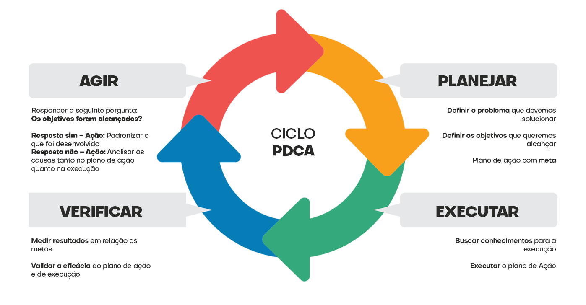
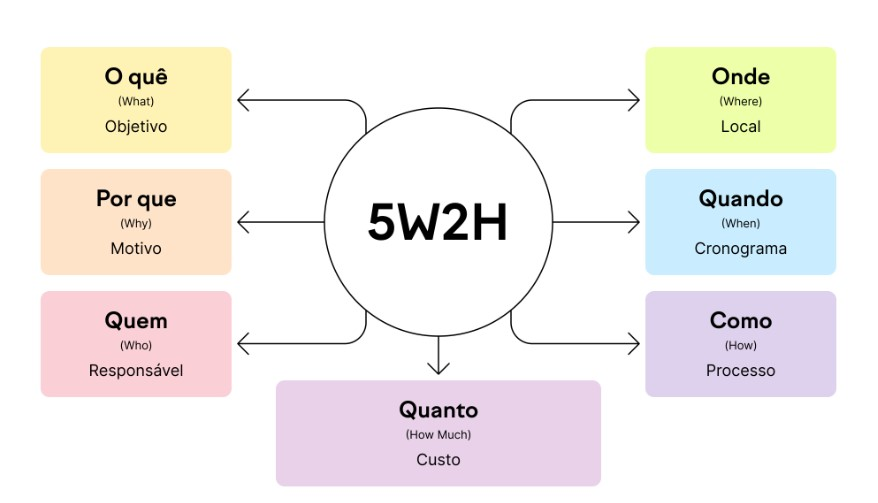
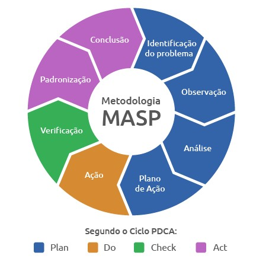
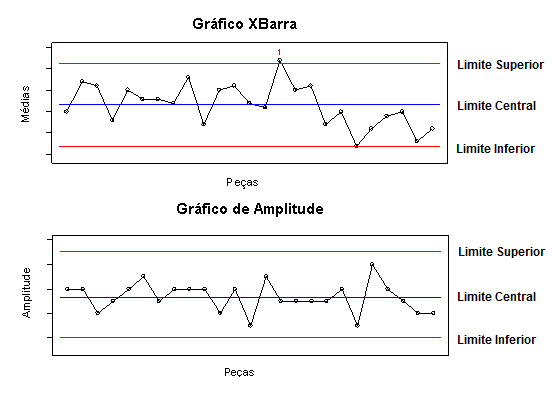

PDCA
O PDCA, sigla para Plan-Do-Check-Act (Planejar-Fazer-Verificar-Agir), é um ciclo de 4 etapas de gestão usado para a melhoria contínua de processos. É uma ferramenta iterativa que visa identificar problemas, implementar soluções e avaliar resultados, promovendo a eficiência e a qualidade.
As quatro etapas do ciclo PDCA são:
1. Planejar (Plan):
Nesta etapa, define-se o objetivo do processo,
as metas a serem alcançadas, os indicadores de desempenho
e os planos de ação necessários para atingir os resultados desejados.
2. Fazer (Do):
A segunda etapa consiste na implementação do plano de
ação, onde as atividades planejadas são executadas.
3. Verificar (Check):
Nesta etapa, avalia-se o desempenho do processo, comparando
os resultados obtidos com as metas estabelecidas. Identificam-se
os pontos fortes, as oportunidades de melhoria e os problemas encontrados.
4. Agir (Act):
Por fim, nesta etapa, as ações corretivas e preventivas são
implementadas para solucionar os problemas identificados e melhorar
o desempenho do processo. É um ciclo contínuo de aprendizado e aprimoramento.
5W2H
O 5W2H é uma ferramenta de gestão que ajuda a estruturar e organizar informações sobre um projeto, tarefa ou problema.
O nome 5W2H vem das iniciais das perguntas que devem ser respondidas:
1. What? (O que?): O que precisa ser feito?
2. Why? (Por quê?): Por que isso é necessário?
3. Where? (Onde?): Onde será realizado?
4. When? (Quando?): Quando será feito?
5. Who? (Quem?): Quem será responsável?
6. How? (Como?): Como será feito?
7. How much? (Quanto custa?): Qual o custo envolvido?
Essa metodologia ajuda a detalhar e esclarecer todos
os aspectos de uma tarefa ou projeto, facilitando a execução
e o alcance de resultados.
Benefícios do 5W2H:
Organização: Ajuda a estruturar as atividades de forma clara e organizada.
Clareza: Esclarece os objetivos e as responsabilidades de cada um.
Eficiência: Otimiza o processo de execução, evitando erros e retrabalhos.
Resultados: Facilita o alcance dos objetivos definidos no plano de ação.
Brainstorming
O brainstorming é uma ferramenta da qualidade que envolve a geração de ideias em grupo para resolver problemas, desenvolver projetos ou inovar. É uma técnica que estimula a criatividade e a colaboração, buscando o maior número possível de ideias em um curto período de tempo.

Como funciona o brainstorming:
1. Definir o objetivo:
É crucial estabelecer um objetivo claro para a sessão de
brainstorming, direcionando as ideias para um foco específico.
2. Escolher os participantes:
É importante selecionar participantes com diferentes perspectivas
e conhecimentos para enriquecer a discussão.
3. Criar um ambiente propício:
Um ambiente livre de julgamentos e aberto a novas ideias é
fundamental.
4. Gerar ideias:
Os participantes devem apresentar suas ideias livremente, sem
críticas ou interrupções, buscando complementar as ideias uns dos outros.
5. Registrar as ideias:
É importante registrar todas as ideias para que possam ser
analisadas posteriormente.
6. Avaliar e selecionar:
As ideias devem ser avaliadas e selecionadas para a implementação
de um plano de ação.
MASP
O MASP (Método de Análise e Solução de Problemas) é uma ferramenta de gestão da qualidade que visa identificar as causas de problemas e propor soluções eficazes. Ele segue um processo estruturado de oito etapas, desde a identificação do problema até a padronização da solução, buscando melhorar processos, produtos e serviços.
O MASP é composto por oito etapas principais:
1. Reconhecimento do Problema:
Identificação e definição clara do problema a ser resolvido.
2. Observação:
Coleta de dados e informações sobre o problema, buscando entender
o contexto e os sintomas.
3. Análise:
Identificação das causas do problema, buscando as causas raízes,
ou seja, as causas que, se eliminadas, resolvem o problema.
4. Plano de Ação:
Desenvolvimento de um plano para implementar as soluções identificadas,
com ações específicas, responsáveis e prazos.
5. Execução:
Implementação do plano de ação desenvolvido.
6. Verificação:
Avaliação dos resultados da implementação do plano de ação, verificando
se as ações foram eficazes.
7. Padronização:
Padronização das soluções implementadas, garantindo que o problema não
volte a ocorrer.
8. Conclusão:
Documentação de todo o processo, incluindo o problema, as causas, as
soluções e os resultados alcançados.
CEP
O Controle Estatístico de Processo (CEP) é uma ferramenta essencial na gestão da qualidade, utilizada para monitorar e controlar processos, identificar variações e garantir a estabilidade e previsibilidade dos resultados.
O CEP ajuda a reduzir defeitos, aumentar a eficiência e melhorar a qualidade de forma contínua.
Como o CEP funciona?
1. Coleta de dados:
Dados sobre as características críticas do processo são coletados de forma sistemática.
2. Cálculo dos limites de controle:
São estabelecidos limites superior e inferior de controle, baseados em análises estatísticas, que definem a faixa de variação aceitável do processo.
3. Gráficos de controle:
Os dados coletados são plotados em gráficos de controle (como os gráficos de Shewhart), que permitem visualizar a variação do processo ao longo do tempo.
4. Análise e interpretação:
Observa-se a distribuição dos dados em relação aos limites de controle. Pontos fora dos limites ou padrões anormais indicam a ocorrência de variações especiais.
5. Ações corretivas:
Uma vez identificada a causa de uma variação especial, medidas corretivas são implementadas para restaurar a estabilidade do processo.